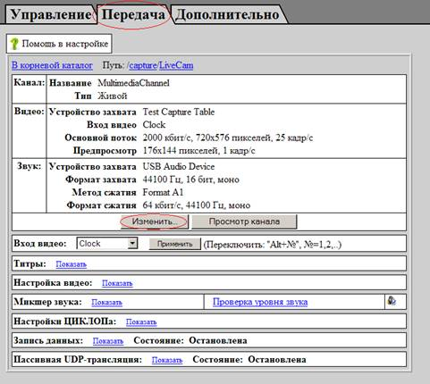

Подключение услуги видеосвязи через «Vidicor Stream Video Hoster»
Для использования услуги необходимо установить на компьютер программный компонент «Vidicor-S»; для этого необходимо обладать правами администратора
Если все требования выполнены, то для установки компонента видеосвязи
Система предложит сохранить или запустить файл установки — согласитесь и запустите его; далее следуйте подсказкам мастера:


На панели управления появится «Центр управления сервером»:
Откройте его, щелкнув мышкой и перейдите во вкладку «Настройка»:
Откроется интерфейс управления сервером:
Примечание! Если интерфейс управления не откроется
– возможно, другие программы блокируют работу сервера, попробуйте открыть
панель управления следующим образом:
Зайдите в браузер Internet Explorer и наберите: http://localhost:9000/ctl/,
если система спросит логин и пароль – введите “admin” и “”.
Зайдите в меню «Настроить публикацию»:
Пропишите следующие настройки (их Вам должен выдать администратор):
"Адрес: порт рефлектора": rt.vidicor.ru:9000
"Логин и пароль" согласно прилагаемым в письме,
Нажмите "Применить".
Если Вы все вделали правильно – на экране появится надпись «Успешная публикация».
Перейдите в закладку «Передача», нажмите «Изменить».

Выберите установленную на вашем компьютере камеру--устройсто захвата видео и микрофон--устройство захвата звука.
А также скорость передачи/качество соответствующее Вашему Интернет-каналу.
Нажмите «Применить».
На этом базовая установка закончена, Вы можете перейти по ссылке на первой странице управления, чтобы проверить Вашу картинку на Веб-сайте.
Для участия в Вебинаре, сообщите администратору “URL своей трансляции”.
Если у вас возникнут вопросы — можете задать их по email: support@vidicor.ru или по телефону +7 (343) 362 81 92(3)Система интернет-видеосвязи "Vidicor Video System"